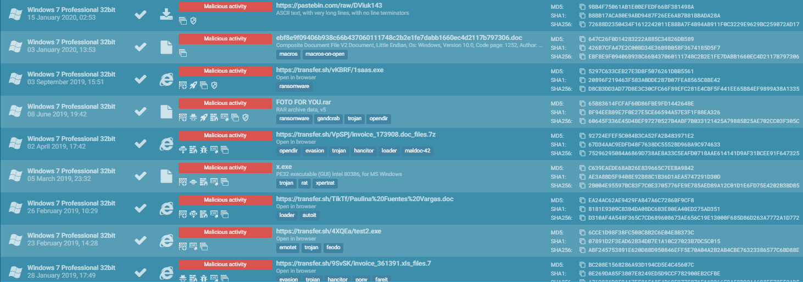
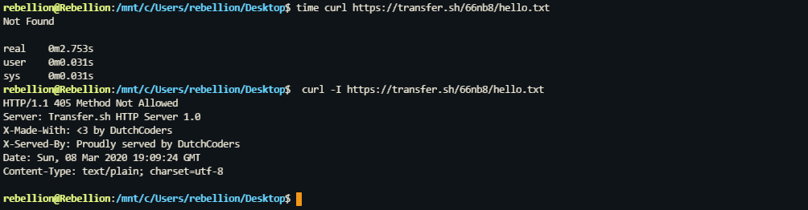
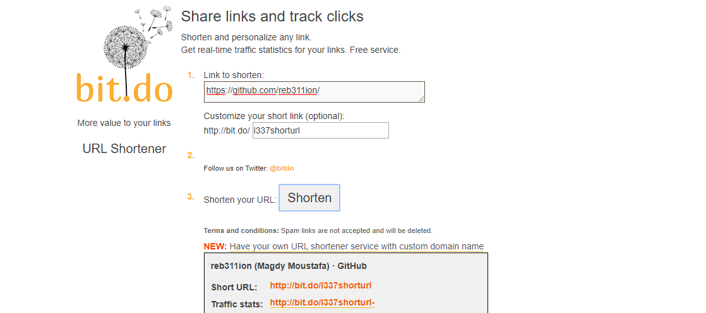
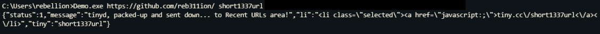

The Short Villain
Data Exfiltration Via Custom Shorten Links
Data exfiltration is the unauthorized copying, transfer or retrieval of data from a computer or server. Data exfiltration is a malicious activity performed through various techniques, typically by cybercriminals over the Internet or another network. Exfiltration consists of techniques that adversaries may use to steal data from your network. Once they’ve collected data, adversaries often package it to avoid detection. This can include compression and encryption. Data Exfiltration may happen in many ways, one of the creative ways out there is to exfiltrate data via DNS where The IP traffic is simply encoded using something like Base64, and broken into chunks that fit in DNS queries. The queries are then sent to the specially modified DNS server, where they are unpacked and sent out onto the internet. But this considered off-topic for now so we won't get deeper into data exfiltration techniques.
How can short links be abused for C2?
I was searching for an easy way to share text files quickly, a simple search led me to transfer.sh, an easy file sharing service that enables users to store files right from the command line. Verhoef (the Author) once said:
It is being used by a lot of people,” he said. “Some are using it for uploading log files, others are exporting complete video surveillance to us. Sometimes it is being abused, by distributing malware, botnets and other malicious tools, but we try to stop it as soon as possible. One time a porn website was serving porn photos through us, and when we found out we had all photos replaced by dogs and kittens.

Which isn't that surprising, Malware authors use almost everything they can reach to achieve their goals. At this point the question was "can adversaries use the same way of sending malware for receiving back data?", and for the first moment it seemed very hard as for that to happen the attacker should know the randomly generated URI which is generated in the following format:
xxxxxxxxxx11https://transfer.sh/[a-zA-Z0-9]{5,6}/MyFileName
Bruteforcing the URI won't be effective as the server delays its response and other methods like HEAD which could be used to check for the 200 OK status code are not allowed:

Start writing code
I first took 5Min to write a simple C# client to use later:
After trying many things that failed I came across the idea of using custom shorten links, what I needed is the ability to create a custom shorten link in an automated manner and anonymously so the rules are:
- No API keys to access the service
- No captcha to stop us from accessing it without an API key
Surprisingly, there are services out there that let us create custom shorten links without captcha such as:

The next step was to build a client for one of the above services, I chose tiny.cc, this one was somehow challenging as the POST parameters names are getting randomized so you should parse the HTML source first and then submit the POST request:

Putting things together
Now we can:
- Upload Files anonymously and get back the URL which we (the attacker) don't know its URI
- shorten the URL with custom URI that we know
for demo purpose I used the Keylogger LimeLogger to generate some data that an attacker maybe interested to harvest and built a basic C# Malware. The config section and variables including log file path was defined as the following:
The malware will do the following:
1 - Check if Mutex name is created. If true, terminate the process. If false, create the mutex with the given name:
2 - Monitor and Log keystrokes in the %TEMP% directory under random name generated in the format [a-zA-Z0-9]{10}\.log:
3 - When log file size reaches a prespecified size, encrypt it with AES/CBC mode using stored KEY and IV:
4 - Upload the encrypted log file to transfer.sh and create shorten URL using a prespecified URI with a number that gets incremented each time a shorten URL is created:
5 - Go Back to step Two
Demo:

The full functioning POC can be found here: c02
Disclaimer
I'm not responsible for any actions, and or damages, caused by this content or the code snippets used here. You bear the full responsibility of your actions and acknowledge that these code snippets were created for demonstration purposes only and its main purpose is NOT to be used maliciously, or on any system that you do not own, or have the right to use.